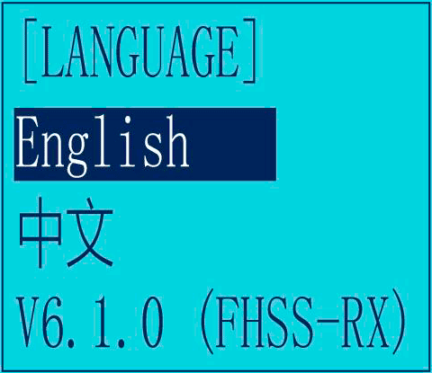
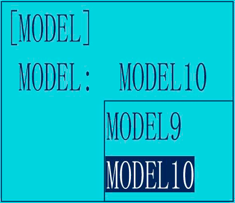

1. LANGUAGE – Выбор языка интерфейса
Меню доступно на английском и на китайском языке. Цифры внизу указывают на текущую версию прошивки. Например V6.1.0 как на картинке ниже.
2. MODEL – Выбор модели
RC6GS V2 может хранить в памяти десять моделей. Каждая модель сохраняется под своим уникальным именем (см. пункт меню «18. NAME»).
3. EPA – Регулировка конечных точек (End Point Adjust)
Эта функция служит для регулировки уровня сигнала в крайних точках движения управляющих рычагов.
У каждого элемента управления аппаратуры есть две крайние точки движения и среднее положение. Уровень сигнала в среднем положении соответствует 0%, уровень сигнала в крайних точках соответствует 100% (значение по умолчанию).
К примеру, вы считаете, что максимальный уровень газа слишком велик и его необходимо уменьшить. Для этого заходим в меню «EPA». За газ отвечает второй канал на передатчике – «Throttle trim». Две крайние точки этого канала регулируются в пунктах TH-FWD (Throttle – Forward «газ») и TH-BRK (Throttle – Break «тормоз»). Уменьшаем уровень сигнала на «TH-FWD» до 50%. Теперь, если выжать полный газ, машинка будит двигаться значительно медленнее.
Так же можно уменьшить скорость заднего хода. За нее отвечает крайняя точка второго канала TH-BRK (Throttle – Break).
Можно уменьшить угол поворота колес. Причем в правую и левую сторону по отдельности.
Описание крайних точек:
- ST-LFT: Руль, крайнее левое положение;
- ST-RGT: Руль, крайнее правое положение;
- TH-FWD: Газ, движение вперед;
- TH-BRK: Газ, движение назад;
- 3C-LFT: 3-й канал, крайнее левое положение;
- 3C-RGT: 3-й канал, крайнее правое положение;
- 4C-UP: 4 канал, верхнее значение;
- 4C-DWN: 4 канал, нижнее значение.
4. STEXP – Экспоненты для рулевого управления (Steering Exponential)
Эта опция используется для изменения чувствительности руля около нейтрального положения и вблизи крайних точек. Она регулируется в пределах [-100;100].
- От -100 до 0 – Чувствительность около нейтрального положения руля становится ниже, около крайних положений чувствительность возрастает.
- 0 – Чувствительность во всем диапазоне движения руля одинакова.
- От 0 до 100 – Чувствительность около нейтрального положения руля становится выше, около крайних положений чувствительность уменьшается.
5. STSPD – Скорость работы рулевого управления (Steering Speed)
Замедляет скорость работы рулевого управления. Т.е. добавляется временная задержка в работу рулевого колеса. Эту функцию полезно использовать, когда машина часто уходит в занос.
Два элемента для управления:
- TURN – поворот рулевого колеса.
- RETURN – возврат рулевого колеса.
6. THEXP - Экспоненты для рычага газа и тормоза (Throttle Exponential)
Здесь можно регулировать чувствительность рычага отвечающего за газ и тормоз.
Три алгоритма настройки чувствительности газа (разгона):
- CRV (кривая по 5 точкам)
- VTR (кривая по одной точке)
- EXP (экспонента)
Выбор активного алгоритма осуществляется в меню MODE:
- MODE/ACT – включен
- MODE/INH – выключен
Чувствительность тормоза настраивается по экспоненте.
7. THSPD – Скорость работы рычага газа (Throttle Speed)
Замедляет скорость работы рычага газа. При включении получаем что-то типа антипробуксовочной системы. Применяется на скользкой дороге и для экономии заряда батареи.
Функция работает только на нажатие рычага газа, на отпускание и торможение не задействована.
MODE:
- OFF – опция отключена
- SPEED1 – алгоритм настройки #1
- SPEED2 – алгоритм настройки #2
8. A.B.S – Антиблокировочная система (Function "A.B.S")
Функция аналогична системе ABS (антиблокировочная система) на настоящих машинах. Применяя ее, мы увеличиваем степень управляемости машиной при торможении.
Импульсный тормоз:
При торможении во время поворота автомобиля с полным приводом или другим типом автомобиля может
возникнуть недостаточная поворачиваемость. С помощью этой функции можно устранить недостаточную
поворачиваемость и плавно проходить повороты.
Принцип работы:
- При торможении сервопривод дроссельной заслонки будет прерывисто пульсировать. Это будет иметь тот же
эффект, что и прокачка тормозов в полноразмерном автомобиле.
- Величина возврата тормоза, импульсный цикл и режим торможения могут быть отрегулированы.
- Область, в которой действует ABS, может быть установлена в соответствии с операцией рулевого
управления. (Mixing function)
Элементы настройки:
ABP: Brake return amount
DLY: Delay amount
CYC: Cycle speed
TGP: Operation point
DTY: Cycle duty ratio
STM: Steering mixing
-ABP (Amount of brake return - Величина возврата тормоза): Устанавливает скорость, с которой сервопривод возвращается в зависимости от срабатывания триггера для отпускания тормоза. При значении 0 функция ABS не выполняется. При значении 50 сервопривод возвращает 50% (1/2) от величины срабатывания триггера, а при значении 100 сервопривод возвращается в нейтральное положение.
-DLY (Delay - Задержка): Устанавливает задержку от срабатывания тормоза до срабатывания ABS. При значении 0 функция ABS активируется без задержки. При 50 % функция ABS активируется с задержкой примерно 0,7 секунды, а при 100% функция ABS активируется с задержкой примерно 1,4 секунды.
-CYC (Pulse speed - Скорость импульса): Устанавливает скорость импульса (цикл). Чем меньше установленное значение, тем быстрее цикл импульсов.
- TGP (Trigger point - Точка срабатывания): Устанавливает точку срабатывания, при которой функция ABS начинает работать при торможении.
-DTY (Cycle duty ratio - Коэффициент циклов): устанавливает пропорцию времени, в течение которого тормоза накладываются, и времени, когда тормоза отпускаются в импульсном режиме. Соотношение может быть установлено на +3 ~ 0 ~ -3 в 7 шагов.
- STM (Steering mixing - микширование рулевого управления): включает или выключает работу ABS в соответствии с диапазоном работы рулевого управления.
9. ACCEL – Начальное ускорение (Throttle Acceleration "ACCEL")
Функция, которая регулирует начальное ускорение машинки при выходе рычага газа из нейтрального положения. Или, если проще, устанавливает начальный уровень газа.
- FWRD: Начальная скорость при движении вперед.
- BRAK: Начальная скорость при движении назад.
10. IDLUP – Холостые обороты ДВС (Idle-Up "IDLUP")
Поднимает обороты холостого хода двигателя бензинового автомобиля.
11. SUB-TRIM – Сабтриммеры (Sub-trim "SUB-TRIM")
Регулировка центральных положений рычагов управления.
12. REVERSE - Реверс каналов (Channel Reverse "REVERSE")
Реверсирует работу каналов. Например, если вы нажимаете на газ, а машинка включает задний ход, то установка реверса на этот канал исправит ситуацию.
13. D/R – (Steering/Throttle Dual Rate "D/R")
Данная опция позволяет одновременно регулировать положение сразу двух крайних точек канала. Если я правильно понял, то регулировка осуществляется пропорционально значениям EPA.
- Steering D/R – Рулевое управление.
- Throttle D/R – Газ.
14. ATL – ATL Function (Brake Side Adjustment "ATL")
Регулировка силы торможения.
15. PMIXO1
16. PMIXO2
17. AUX-CH - Вспомогательный канал (Auxiliary Channel "AUX-CH")
Положение сервопривода канала 3 и канала 4 можно установить с передатчика. Когда канал CH3 назначен клавише 3-го канала, эта настройка связана с клавишей. Если каналы CH3 и CH4 не назначены клавише 3-го канала, их можно установить с помощью этого экрана. Вы также можете установить каналы CH3, CH4, CH5 и CH6 одновременно как VR или SW.
18. NAME - Имя модели (Model Name "NAME")
RC6GS V2 хранит в памяти десять моделей. Каждая память модели может быть названа отдельно в соответствии
с требованиями пользователя.
Заводское имя по умолчанию: MODEL1
19. ALARM - Предупредительная сигнализация при низком напряжении и уровне сигнала (Safety alarm for low voltage and Signal strength )
Когда напряжение передатчика, приемника, автомобильного аккумулятора и уровень сигнала RSSI ниже установленного значения, на экране передатчика будет отображаться текст и двойной звуковой сигнал «didi», напоминающий вам.
Вы можете установить значение в меню «ТРЕВОГА»: одновременно нажмите кнопки «Выход» и «Ввод», чтобы войти в меню, выберите опцию «19. ТРЕВОГА», нажмите кнопку «Ввод», чтобы получить доступ к функции «ТРЕВОГА». интерфейс. Напряжение сигнала тревоги по умолчанию для передатчика составляет 5,0 В, напряжение сигнала тревоги по умолчанию для приемника составляет 4,0 В, а напряжение сигнала тревоги по умолчанию для автомобильного аккумулятора составляет 11,1 В.
Напряжение сигнала тревоги по умолчанию для однокристальной батареи составляет 3,7 В. Например, если вы используете литиевую батарею 3S для своей модели, то значение аварийного сигнала низкого напряжения должно быть установлено на 11,1 В (3,7 В × 3 с). Метод настройки передатчика и приемника одинаков.
Аварийное значение RSSI отключено по умолчанию. Пользователи могут установить его как значение RSSI, соответствующее самому дальнему безопасному расстоянию до фактического элемента управления. Например, максимальное расстояние дистанционного управления составляет 400 м, соответствующее значение RSSI составляет -85 дБм, тогда вы можете установить значение сигнала тревоги RSSI как -85 дБм. Во время движения автомобиля, если батарея передатчика или батарея автомобиля разряжены, или сигнал RSSI слабый, автомобиль потеряет управление. Поэтому, когда звучит сигнал тревоги, пожалуйста, немедленно прекратите движение и верните автомобиль, проверьте причину сигнала тревоги и устраните ее должным образом. Подсказка будильника правильная:
20. GYRO - Чувствительность гироскопа (Gyro Sensitivity “GYRO”)
Эта функция доступна для включения или выключения чувствительности гироскопа и микширования VR.
Когда MIX установлен в положение OFF, гироскоп отключен, а когда MIX установлен в положение ON, вы можете отрегулируйте чувствительность гироскопа STD или VR. STD настраивается на экране, а VR по умолчанию CH3. В нормальном режиме (STD) диапазон чувствительности составляет 0%-100%.
21. F/S - Отказоустойчивость (Fail Safe ”F/S”)
Функция Fail Safe нужна для устанавки определенных значений на каналах приемника при потере сигнала.
Диапазон значений: от -100 до +100.
Значение по умолчанию: 0
- ST: Steering(CH1)
- TH: Throttle(CH2)
- CH3: Channel3(VR)
- CH4: Channel4(SWA)
- CH5: Channel5(SWB)
- CH6: Channel6(SWC)
22. ID SEED - Дочерний идентификатор (Subsidiary ID “ID SEED”)
Функция ID SEED означает назначение вспомогательного идентификатора среди нескольких получателей привязки для реализации управления. Всего можно сохранить 10 независимых дочерних идентификаторов.
Например, RC6GS V2 выполнил привязку 10 различных лодок и настройку соответствующих параметров. Включите функцию ID SEED, выберите лодку ID.1 и подведите ее к центру воды, но она неожиданно перестает работать. Затем мы можем переключиться на лодку ID.2 (или любую другую дочернюю лодку ID) и управлять ею независимо, чтобы спасти ID. 1 шлюпка вместо того, чтобы управлять обеими шлюпками одновременно, что усложняет спасение. В отличие от традиционного режима привязки, независимый идентификатор может легко реализовать спасение застрявшей лодки в воде, вызванной различными причинами.
23. RESET - Сброс к заводским настройкам (Factory Reset “RESET”)
Настройки для каждой модели можно СБРОСить до значений по умолчанию. Например СБРОС можно использовать для очистки памяти перед вводом новых настроек модели.
ВНИМАНИЕ: Сброс памяти текущей модели безвозвратно сотрет ВСЕ настройки для этой модели. Настройки нельзя будет восстановить!